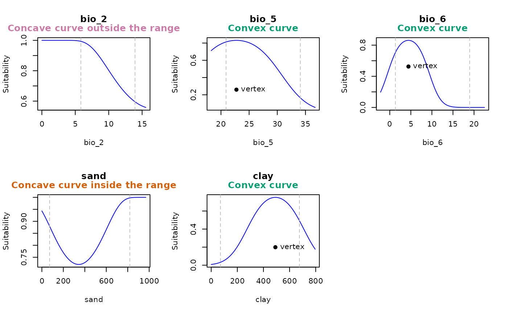

detect_concave.RdIdentifies the presence of concave response curves within the calibration range of GLM and GLMNET models.
detect_concave(model, calib_data, extrapolation_factor = 0.1,
averages_from = "pr", var_limits = NULL, plot = FALSE,
mfrow = NULL, legend = FALSE)an object of class glmnet_mx or glm.
data.frame or matrix of data used for model calibration.
(numeric) a multiplier used to calculate the extrapolation range. Larger values allow broader extrapolation beyond the observed data range. Default is 0.1.
(character) specifies how the averages or modes of the variables are calculated. Available options are "pr" (to calculate averages from the presence localities) or "pr_bg" (to use the combined set of presence and background localities). Default is "pr". See details.
(list) A named list specifying the lower and/or upper limits
for some variables. The first value represents the lower limit, and the
second value represents the upper limit. Default is NULL, meaning no
specific limits are applied, and the range will be calculated using the
extrapolation_factor. See details.
(logical) whether to plot the response curve for the variables. Default is FALSE.
(numeric) a vector of the form c(number of rows, number of columns) specifying the layout of plots. Default is c(1, 1), meaning one plot per window.
(logical) whether to include a legend in the plot. The legend indicates whether the response curve is convex, concave outside the range limits, or concave within the range limits. Default is FALSE.
A list with the following elements for each variable:
is_concave (logical): indicates whether the response curve for the variable is concave within the limit range. This occurs when the quadratic term's coefficient is positive and the vertex lies between x_min and x_max,
vertex (numeric): the vertex of the parabola, representing the point where the curve changes direction.
b2 (numeric): the coefficient of the quadratic term for the variable. Positive values indicate a concave curve.
x_min and x_max (numeric): the range limits to identify concave curves, calculated as the observed data range multiplied by the extrapolation factor.
real_x_min and real_x_max (numeric) the actual range of the data, excluding the extrapolation factor.
Concave curves are identified by analyzing the beta coefficients of quadratic terms within the variable's range. The range for extrapolation is calculated as the difference between the variable's maximum and minimum values in the model, multiplied by the extrapolation factor. A concave curve is detected when the beta coefficient is positive, and the vertex — where the curve changes direction — lies between the lower and upper limits of the variable.
Users can specify the lower and upper limits for certain variables using
var_limits. For example, if var_limits = list("bio12" = c(0, NA),
"bio15" = c(0, 100)), the lower limit for bio12 will be 0, and the
upper limit will be calculated using the extrapolation factor. Similarly,
the lower and upper limits for bio15 will be 0 and 100, respectively.
For calculating the vertex position, a response curve for a given variable is
generated with all other variables set to their mean values (or mode for
categorical variables). These values are calculated either from the presence
localities (if averages_from = "pr") or from the combined set of
presence and background localities (if averages_from = "pr_bg").
# Import example of a fitted_model (output of fit_selected()) that have
# concave curves
data("fitted_model_concave", package = "kuenm2")
#Response curves
ccurves <- detect_concave(model = fitted_model_concave$Models$Model_798$Full_model,
calib_data = fitted_model_concave$calibration_data,
extrapolation_factor = 0.2,
var_limits = list("bio_2" = c(0, NA),
"sand" = c(0, NA),
"clay" = c(0, NA)),
plot = TRUE, mfrow = c(2, 3), legend = TRUE)
